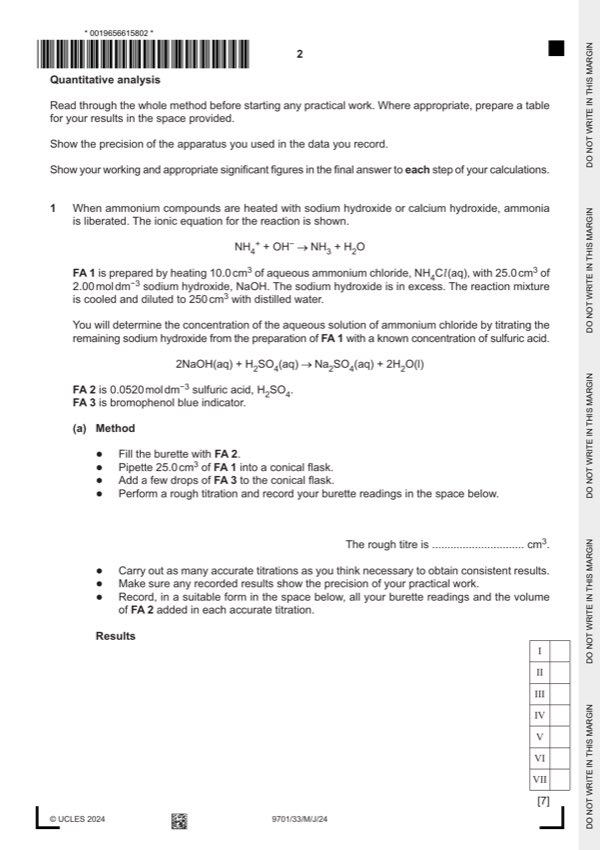
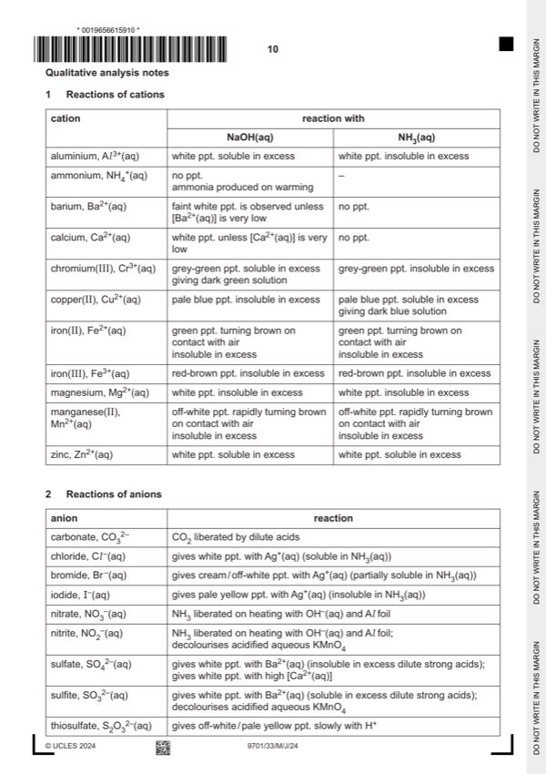

Question 1

Original paper page 2

Original paper page 10
Part 1(a) — solution
Answer: OR cm3 unit given for each volume recorded
- two burette readings AND titre for the rough titration
- initial and final burette readings for two (or more) accurate titrations
- initial / start AND (burette) reading / volume
- final / end AND (burette) reading / volume
- titre OR volume / FA 2 AND used / added
- unit: / cm3 OR (cm3) OR in cm3 (for each heading)
- two (or more) accurate identical titres (ignoring any that are labelled ‘rough’), then
- two (or more) accurate titres within 0.05 cm3, then
- two (or more) accurate titres within 0.10 cm3, etc
Mark points
- two burette readings AND titre for the rough titration
- initial and final burette readings for two (or more) accurate titrations
- initial / start AND (burette) reading / volume
- final / end AND (burette) reading / volume
- titre OR volume / FA 2 AND used / added
- unit: / cm3 OR (cm3) OR in cm3 (for each heading)
- two (or more) accurate identical titres (ignoring any that are labelled ‘rough’), then
- two (or more) accurate titres within 0.05 cm3, then
- two (or more) accurate titres within 0.10 cm3, etc
Part 1(b) — solution
- Candidate must take the average of two (or more) titres that are within a total spread of not more than 0.20 cm3
- Working / explanation must be shown OR ticks must be shown next to the two (or more) accurate readings selected
- The mean should be quoted to 2 decimal places and be rounded to nearest 0.01 cm3
Mark points
- Candidate must take the average of two (or more) titres that are within a total spread of not more than 0.20 cm3
- Working / explanation must be shown OR ticks must be shown next to the two (or more) accurate readings selected
- The mean should be quoted to 2 decimal places and be rounded to nearest 0.01 cm3
Part 1(c)(i) — solution
answers to (c)(ii), (c)(iii), (c)(iv) and (c)(v) are given to 3 or 4 significant figures 1
Mark points
- Include the ideas shown in the solution above.
Part 1(c)(ii) — solution
- amount of H2SO4 in mean titre = 0.052 (b)/1000 (mol)
Mark points
- amount of H2SO4 in mean titre = 0.052 (b)/1000 (mol)
Part 1(c)(iii) — solution
- amount of NaOH left in 25 cm3 = (c)(ii) 2 (mol)
Mark points
- amount of NaOH left in 25 cm3 = (c)(ii) 2 (mol)
Part 1(c)(iv) — solution
- [M1] initial amount of NaOH = 2.00 25.0/1000 = 0.05(00) (mol) OR (c)(iii) 10 (mol)
- [M2] amount of NaOH reacting with NH4Cl = 0.05 – (c)(iii) 10 (mol)
Mark points
- [M1] initial amount of NaOH = 2.00 25.0/1000 = 0.05(00) (mol) OR (c)(iii) 10 (mol)
- [M2] amount of NaOH reacting with NH4Cl = 0.05 – (c)(iii) 10 (mol)
Part 1(c)(v) — solution
- concentration of NH4Cl = (c)(iv) 1000/10 (mol dm−3)
Mark points
- concentration of NH4Cl = (c)(iv) 1000/10 (mol dm−3)
Part 1(d) — solution
Answer: AND because an acidic agent would neutralise / react with NH3
selects either (concentrated) sulfuric acid OR phosphorus(V) oxide 1
AND because an acidic agent would neutralise / react with NH3
University Press & Assessment 2024 Page 7 of 11
9701/33 Cambridge International AS & A Level – Mark Scheme May/June 2024
Mark points
- Correct result: AND because an acidic agent would neutralise / react with NH3